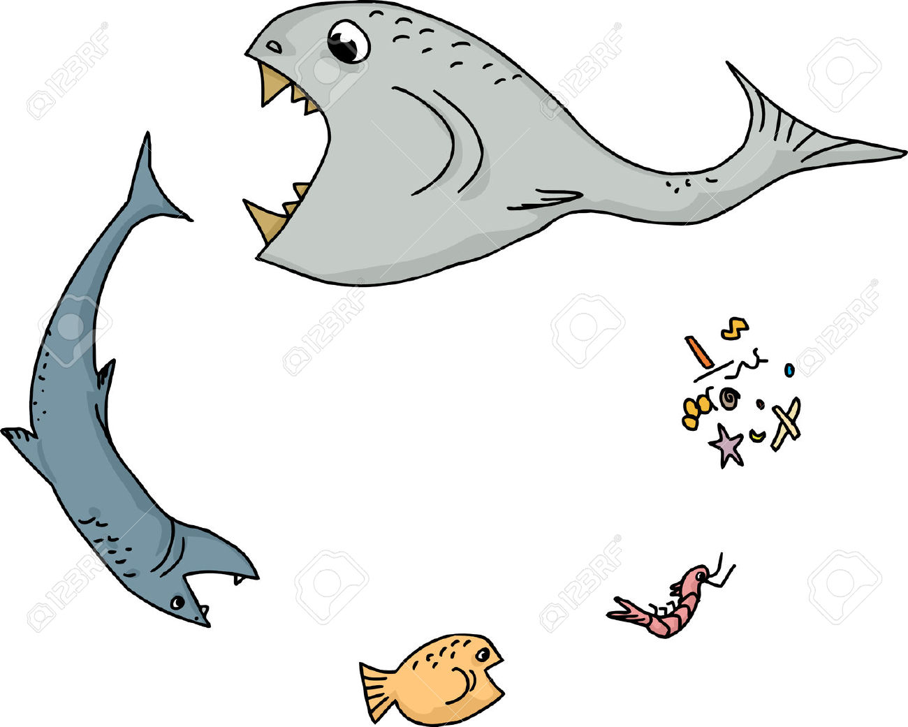
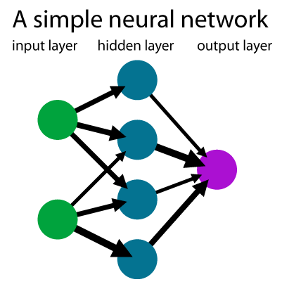
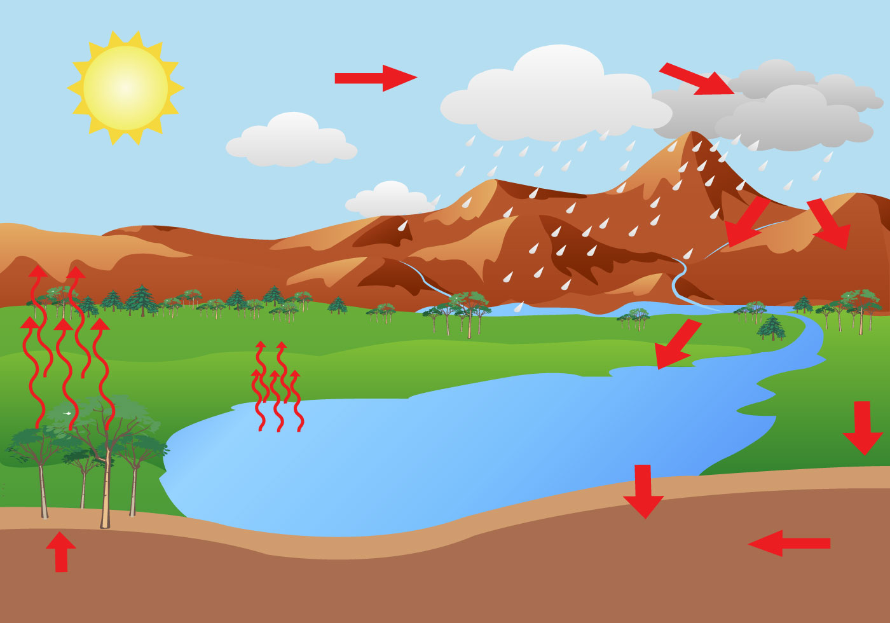

Los ciclos están presentes en la vida real, a continuación te presentamos algunos ejemplos en dónde es importante su uso.
-
Cadena Alimenticia (Ciclo)
El proceso de la cadena alimenticia es un gran ejemplo de un dígrafo. Cada animal es un vértice del dígrafo y cada animal que come a otro (mostrado con una flecha) es una arista del mismo. Además, es un grafo en el cual las aristas tienen un sentido definido.
 -
Redes neuronales artificiales (conexiones)
Un excelente ejemplo del uso de grafos en el campo informático y usando el esquema biológico de las neuronas, podemos analizar las redes neurológicas artificiales, que un ámbito más productivo, se emplean en machine learning y este en la inteligencia de negocios. En este orden parcial, existen 3 capas principales divididas en entradas sensoriales, la capa de procesamiento (oculta) y la capa de salida de la información
 -
Ciclo del hidrológico
Otro ejemplo sería el ciclo del agua. En este ejemplo cada proceso por el que pasa el agua sería un vértice del dígrafo y cada paso de proceso sería las aristas. Cada vértice tiene una relación con otro. Además el ciclo de los estados del agua es un dígrafo también, siendo los estados los vértices y el proceso por el que pasa las aristas:
